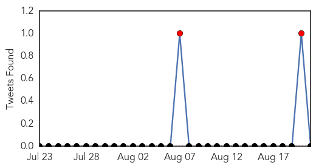
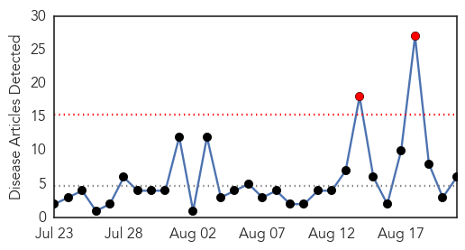
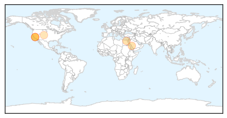
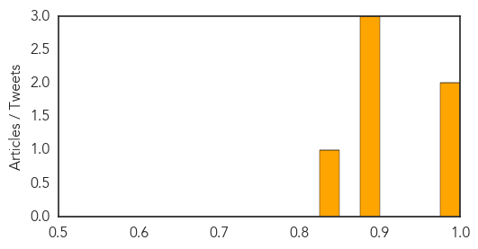

MERS
30-Day Web Trend
1 alerts, 0 warnings

30-Day Twitter Trend
2 alerts, 0 warnings

Article Locations

Article Confidences

Top Articles:
- 0.999
- Ten new Riyadh MERS cases as hospital ED shuttered
- 0.999
- Saudi MERS infections soar ahead of Hajj pilgrimage
- 0.999
- Saudi MERS infections soar ahead of Haj
- 0.998
- MERS sickens six more in Riyadh outbreak
- 0.996
- WHO official coming to assess MERS outbreak
- 0.990
- Saudi MERS infections soar ahead of hajj
- 0.989
- Saudi Arabia registers 2 MERS death, 9 new cases --China Economic Net
- 0.986
- No camel slaughter during this Haj
- 0.955
- KBS World Radio
- 0.525
- Religious Affairs Minister sees off first batch of Indonesian haj pilgrims
Top Tweets:
- 0.793
- RT: MERS balls - MERS-CoV cases by week beginning.. http://t.co/D67xdnOoNO
- 0.615
- AFD Blog `Saudi MOH Announces 6 More MERS Cases In Riyadh' MERS-CoV http://t.co/xEsj1Y3BPO
Meningitis
30-Day Web Trend
2 alerts, 0 warnings

30-Day Twitter Trend
2 alerts, 0 warnings

Article Locations
Article Confidences
Top Articles:
- 0.993
- As Saudi Arabia Grapples With MERS Outbreak, a Vaccine Is in Sight
- 0.980
- Al-Ahram Weekly
- 0.899
- Start of school year calls for vaccine check
- 0.895
- Start of School Year Calls for Vaccine Check
- 0.893
- Start of School Year Calls for Vaccine Check
- 0.845
- Boneth Ahaneku: Back to school? Don't forget meningitis B vaccine
Top Tweets:
-
No tweets found for Aug 21, 2015